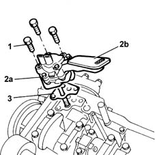

1084B14 engine oil pump - r+r with power unit removed
- Path
- Procedures > 10 ENGINE UNIT > 1084 ENGINE LUBRICATION SYSTEM > 1084B engine oil lubrication circuit > 1084B14 engine oil pump - r+r with power unit removed
- Kind
- repair procedure (removal / refitting; the operation number is the code)
- Applies to
- engines: 1.6 16v; all production periods
- Interactive page
- https://sloeber94.github.io/elrnDB-fMltpl/en/#/2892350
Applies to: engines: 1.6 16v; all production periods
 Removing
Removing
 Refitting
Refitting1004D10 power unit (manual gearbox), removed, remove and re-build
1004D40 engine - position on stand and remove
1020A24 crank case oil sump - r + r clean seals for sealant application with engine removed
1. Undo the fixing bolts.
2. Remove the engine oil pump (2a) complete with draught device (2b).
3. Recover the oil pump gasket.

Applies to: engines: 1.6 16v; all production periods
Refitting
RemovingReplace the oil pump gasket.
Position the oil pump fitting the drive shaft in its housing.
Tighten the bolts fixing the oil pump to the cylinder block/crankcase to torque.
 | Fastening | Component | Ø | Value (daNm) |
|---|---|---|---|---|
- | Bolt | ENGINE OIL PUMP | M6 | 2.5 |
1020A24 crank case oil sump - r + r clean seals for sealant application with engine removed
1004D40 engine - position on stand and remove
1004D10 power unit (manual gearbox), removed, remove and re-build